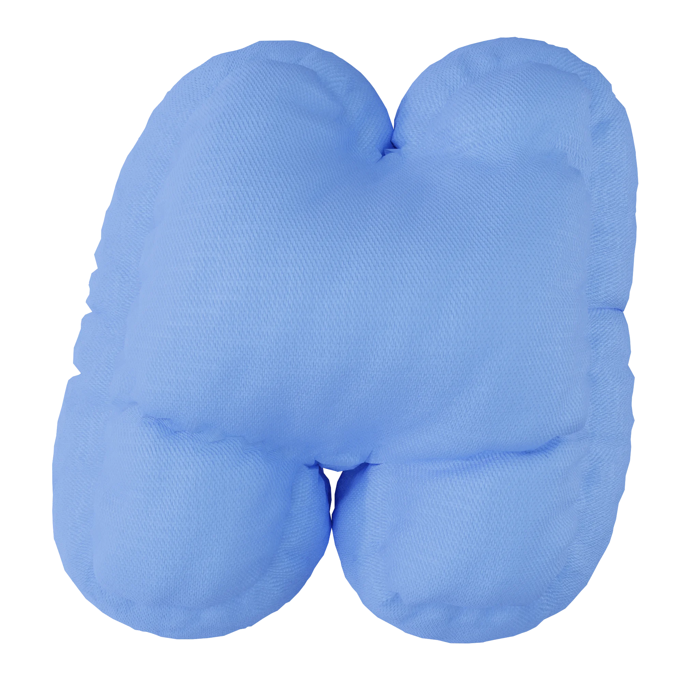
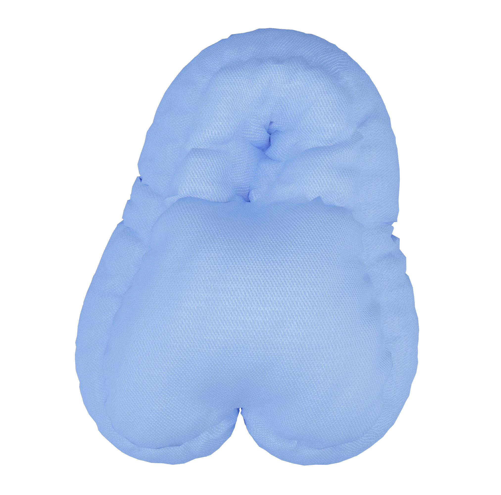
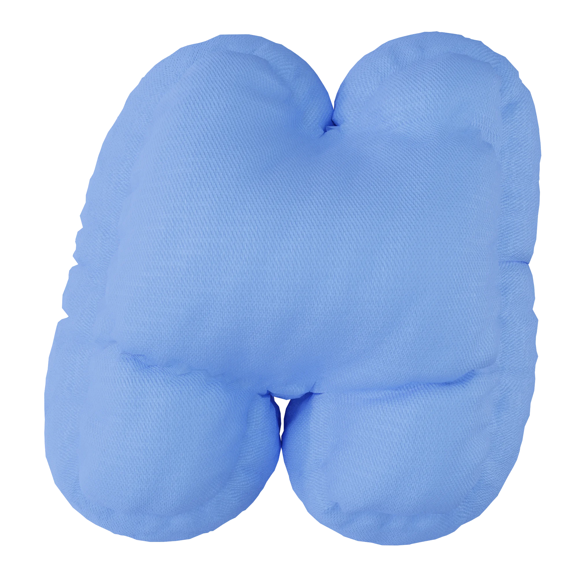
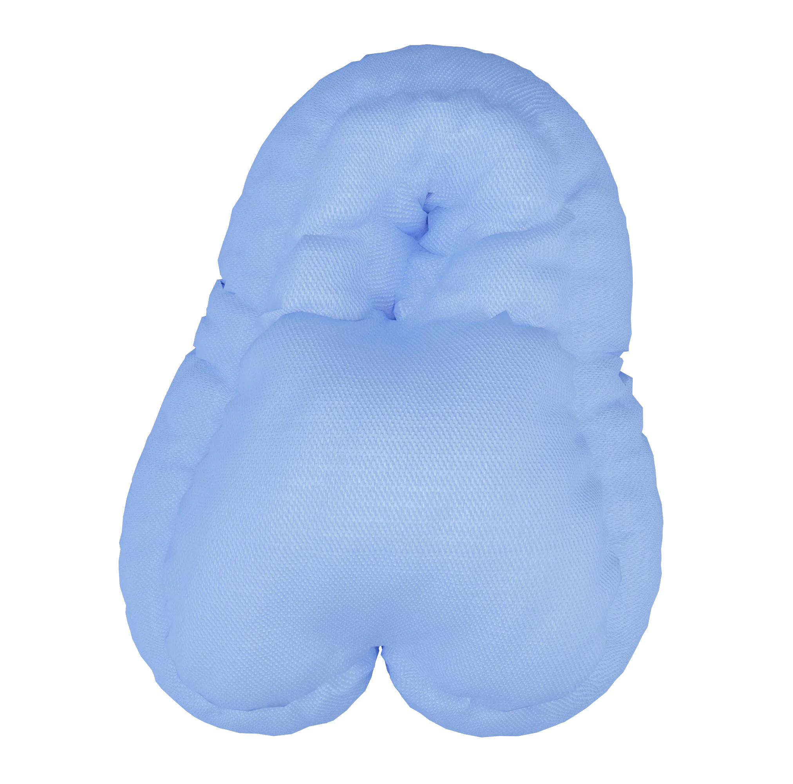
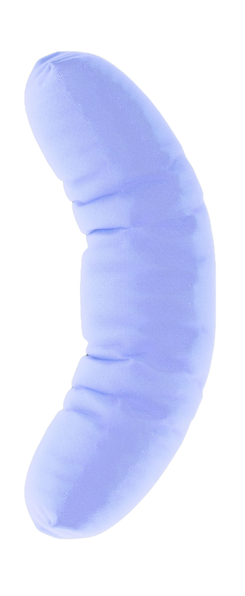

SNOK(S) — медиа
про сон и сновидения
значения образов
в сновидениях
улучшение качества
сна и жизни
познание себя и раскрытие
своего внутреннего мира
о нас
Наш проект родился из желания помочь людям соприкоснуться
с уникальным миром подсознания.
подробнее
П чему м е это снится?
Есть ли какой-то с ысл
в моих сн х?

  
 
Наша миссия — создание платформы, которая поможет каждому разобраться в своих сновидениях и глубже понять природу самого сна.
факты
про сон
Наведи/Нажми на круг, чтобы
узнать факт!
Обучение
Во время сна наши знания
переходят из кратковременной
памяти в долговременную
Нехватка сна
Хроническая нехватка сна ведёт
к расстройствам слуха, зрения,
повышенной тревожности,
нарушению обмена веществ,
нервным тикам и общей слабости
Время
Примерно четверть всей своей
жизни мы проводим во сне
Забывчивость
Через 5 минут после пробуждения
мы забываем до 50% снов, а через 10
минут — до 90%.
Цвета
Примерно 12% людей видят сны
только в черно-белом цвете.
Цвета
Примерно 12% людей видят сны
только в черно-белом цвете.
статьи